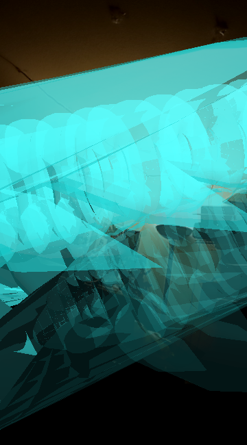

2020. VR Environment, "The space brothers have been waiting. Transcend your mortal shell and ovbserve the form of peak evolution. Enter the Unarius Academy of Science. A digital plane made of all the knowledge in the universe." -Fictional cult member
This piece was inspired by the beliefs of the Unarian religion, a group of people who believe we're reliving past lives that happened long long ago in a galaxy far far away. They believe their founder Ernest Norman was followed by 2 spirits that entrusted him in building a library housing the knowledge of the universe. The spirits, beings known as the space brothers would one day come in physical form once we were ready, bringing the necessary knowledge for the library. This piece puts an imaginative outsider spin on their prophecy.
Horseshoe crabs and their trilobite ancestors being the vehicles representing the wise beings from millions of years ago. In science those animals are known for being evolutionarily successful in their respective niches. Their prevalance through millions of years has helped scientists date relative fossils and guage the ecology. Today horseshoe crabs play a vital role in the delivery of knowledge, their blood being harvested in great quanities for their high copper density, to produce electronics, potentialy threatening the species.
Metamorphosis of the Imagination

This series of pieces were inspired by the beliefs of the Unarian religion, a group (cult) of people who believe we're reliving past lives that happened long long ago in a galaxy far far away. They believe their founder Ernest Norman was followed by 2 spirits that instructed him that his life mission was to build a library of the universe. The spirits, beings known as the space brothers, would one day come back to earth in physical form once we were deemed ready. They would bring the necessary material for the library. Their conditional prophecy has always made me ask what does it mean to be ready? That question will become a major theme of the series. Would we even be able to understand or communicate with the aliens. These art pieces put an imaginative outsider spin on their prophecies, beliefs, teachings, and the descriptions of Ernest L.Norman’s experience. The Unarian religion is just as interesting as any piece of mythology, it’s a rich fantasy which has been built up for almost 70 years. I will mainly use their lore for inspiration and as a jumping off point, the same way many other religions have always inspired the arts.
The other themes I explored and blended into each piece were inspired by aspects of biology and paleontology. Frequently I ask the question “what would alien life look like?” Going back millions of years, the earth we live on would be entirely unrecognizable. It would be entirely alien and we can only guess what life was like back then. The prehistoric world is a fun mystery to explore because we can only imagine through inference what anything looked like. At any point in history intelligent life could have developed and taken over, humans just got lucky here. “What kinds of organisms could have evolved into advanced intelligence on other planets?” “What is the optimal form?” “What does the physical form represent?” Prehistoric ones because horseshoe crabs and trilobites have maintained the same form for millions of years being the perfect organism of their niche. Today there’s a concept known as carcinisation, a type of convergent evolution where multiple vastly different species agree the most optimal body shape to evolve into is the crab.
Each individual piece in this series is an iteration on the last. There is a metamorphosis or conversion process from one medium to the next. Beginning in a digital interactive environment, then transitioning into an augmented reality, to a physical object, this process represents the manifestation of a belief or idea into something physical. It’s symbolic of the journey. It could be travelling from an alien planet to ours through multiple planar jumps or it could be the literal idea of a journey, one could take to get to a destination and the life cycle of an idea. The pieces in the series take the approach of playing a game of telephone off of each other rather than creating one conversation. Small changes to an idea or added influence create something entirely new.


2020. Interactive Augmented Reality, Intergalactic Spirit "The spirit you see means you have a greater purpose. Are you one of the chosen? Can you make contact?" -Fictional cult member This piece was inspired by the beliefs of the Unarian religion, a group of people who believe we're reliving past lives that happened long long ago that happened in a galaxy far far away. They believe their founder Ernest L. Norman was followed by spirits that instructed him that his life mission was to build a library of the universe. This piece puts an imaginative outsider spin on Ernest L.Norman’s experience. There are little details of the specifics of his experience so I propose two questions. What would alien life look like? Animals adapt and evolve to their environment, any form of life could have reached higher intelligence. Had earth been slightly different from the one we know today, animals that dominated the earth prior to us could have filled our shoes. This piece gives the role of intelligent life to the trilobites, the animals who lived for most of earth’s life. How would we communicate with extraterrestrial life? This piece makes use of real radio signals captured from space, speculated to be originating from extraterrestrial life. The spirit you see in Augmented reality is your own guide to your life’s purpose. What kind of message can you decipher from it when you make contact?
if you are on mobile tap here to view piece. otherwise scan this QR code

if you are on mobile tap here to view piece. otherwise scan this QR code
.jpg)
.jpg)
.jpg)
.jpg)
.jpg)
.jpg)
.jpg)
2020 PLA 3D print Sculpture, This piece draws inspiration from the African shrine objects known as boli. Traditional boli are made in bulbous four legged shapes starting from a wood core then encrusted wuith organic sacrifical material (the insides of living things). They are meant to capture the living essence of things and control spiritual energies to positively affect the community. What if a boli was made today or in the future? The issue of plastic polition today has caused discoveries of plastic inside the organs of animals. This sculpture takes that and adapts the concept of the boli. The material being packed and encrusted is the PLA extruded by the printer, which honestly may become part of an animal in the future. The dinosaur like shape the sculpture takes does not pay homage to any animal in particular but can be an analog for animals we'ev already lost. The focus of the shape is making the sculpture seem alive, it's posed in movement.
Ernest L. Norman;(1956, 1960). Infinite Contact. Unarius Science of Life.
Ruth E. Norman; (1975). Biography of Unarius, Unarius Publications
Ken Tsuchiya(Author), Gunma Natural Museum(Editor); (2018) Ko Seibutsu no Saizu ga Jikkan Dekiru! [Real Size Ancient Creatures can be Realized!]
Madrigal, Alexis C. “The Blood Harvest.” The Atlantic, Atlantic Media Company, 10 Jan. 2017, www.theatlantic.com/technology/archive/2014/02/the-blood-harvest/284078/.
met museum staff. “Power Object (Boli).” Metmuseum.org, www.metmuseum.org/art/collection/search/312389.
OCEANOGRAPHIC STAFF. “Researchers Discover New Amphipod in the Mariana Trench and Name It Eurythenes Plasticus, after Plastic Found in Its Body.” Oceanographic, 9 Mar. 2020, www.oceanographicmagazine.com/news/eurythenes-plasticus/.